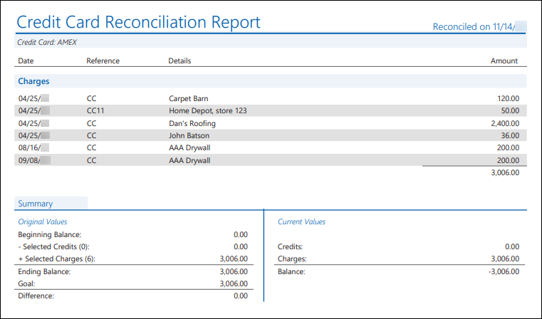
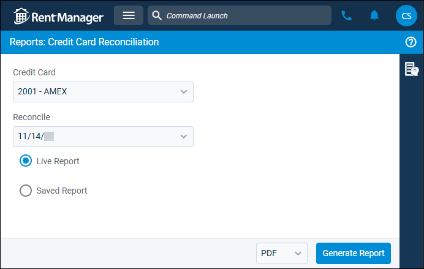
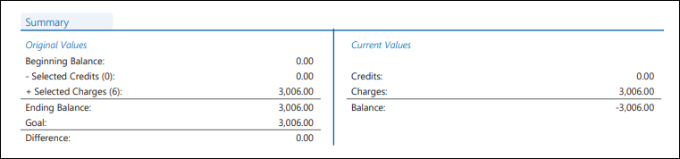

Source: https://rmxhelp.rentmanager.com/Topics/Express/Other/Reports/Credit-Card-Reconciliation.htm
Credit Card Reconciliation (Report)
The Credit Card Reconciliation report displays a list of the credits and charges cleared when a user performs a credit card reconciliation. The report also displays the cleared and actual credit card balances as of the reconciliation date and the totals of the cleared charges and credits.
More Information
Transactions marked as cleared outside of a credit card reconciliation do not display in the Credit Card Reconciliation report.
Additionally, you can select Saved Report or Live Report. The saved version of the report is what is created at the time the user finishes the credit card reconciliation, and the report results are saved as a PDF. The live version of the report displays the data currently in Rent Manager, such as transactions that were edited since the reconciliation. As a result, the live version of the report may not match the saved version.
Related Privileges
| Group | Privilege | Column |
|---|---|---|
| Letter/Email Templates/Reports/Packets | Run reports | Enabled |
Additionally, on the Reports tab, you must have access to Credit Card Reconciliations.
For more information, refer to Control User Access.
To view the Credit Card Reconciliation report, do the following:
-
Go to
 arrow_forward Banking arrow_forward Reconciliation arrow_forward Credit Card Reconciliation.
arrow_forward Banking arrow_forward Reconciliation arrow_forward Credit Card Reconciliation.
The Reports: Credit Card Reconciliation page displays. -
Adjust the report options as desired. Each option is described below.
-
Generate the report in your desired file format(s).
Related Preferences
Reports may look different depending on whether or not the Use modernized report style system preference is enabled. For more information, refer to General Report Options (System Preferences).

Report Options
The report options described below determine what data displays in the report.

Credit Card
Select the credit card for which Rent Manager examines reconciliation data.
Reconcile
Select the desired reconciliation date from the drop-down list and then choose one of the following report types:
| Option | Description |
|---|---|
|
Live Report |
A current version of the reconciliation data, which includes any edits and deletions made to transaction items that occurred after the reconciliation displays. This version of the report may not match the saved version. |
|
Saved Report |
The static version of the report that was created at the time the user completed the reconciliation. This version excludes any edits or deletions made to transaction items after the reconciliation displays. |
Report Results
The report results are described below including, if applicable, section, column, and subreport or tab descriptions.
Report Header
The report header displays the report name and key information selected in the report options, such as date information and which properties were examined in the report.
Credits
The journal entries that debited the credit card account and/or credits that were reconciled during the selected credit card reconciliation period display.
Charges
The journal entries that credited the credit card account and/or charges that were reconciled during the selected credit card reconciliation period display.
Outstanding Credits
Any journal entries that debited the credit card account and/or credits that were created in Rent Manager but not reconciled yet display. This section displays only if the Saved Report option is selected from the Reconciliation Register.
Outstanding Charges
Any journal entries that credited the credit card account and/or charges that were created in Rent Manager but not reconciled yet display. This section displays only if the Saved Report option is selected from the Reconciliation Register.
Column Descriptions
The columns that display in the report are described below.
| Column | Description |
|---|---|
|
Date |
The date of each transaction. |
|
Reference |
The system-generated reference number for each charge, credit, or journal entry. |
|
Details |
The vendor associated with each transaction. |
|
Amount |
The amount for each charge, credit, or journal entry. A subtotal displays at the bottom of each section. |
Summary Subreport
The Summary subreport provides two columns of information to help you see the impact of the reconciliation on your credit card account. This subreport displays the credit card balances at the time of the selected credit card reconciliation and the current values of credits, charges, and journal entries.

The following rows display in the Original Values subsection:
| Row | Description |
|---|---|
|
Beginning Balance |
The cleared balance as of the previous credit card reconciliation. |
|
Selected Credits |
The total of the selected journal entries that debited the credit card account and/or credits reconciled during the selected credit card reconciliation period. The total number of selected credits appears in parentheses. |
|
Selected Charges |
The total of the selected journal entries that credited the credit card account and/or charges reconciled during the selected credit card reconciliation period. The total number of selected charges appears in parentheses. |
|
Ending Balance |
The credit card balance after the reconciliation has taken place using the following formula: Reconciled Balance = Previous Cleared Balance - (Selected Credits + Selected Charges) The amount that displays should match the ending credit card balance on your credit card statement and is the new cleared credit card balance. |
|
Goal |
The Ending Balance entered on a credit card reconciliation for your reference. The number entered should match the total of the credits and charges that appear on your credit card statement. |
|
Difference |
Any difference between the Reconciled Balance and the Goal. Ideally, the Difference will be 0, meaning that your credit card account and the Rent Manager credit card balance are in agreement. |
The following rows display in the Current Values subsection:
| Row | Description |
|---|---|
|
Credits |
The total of all credits and/or journal entries that debited the credit card account in the credit card reconciliation. This total includes any changes that were made to the credits since the credit card reconciliation was completed. |
|
Charges |
The total of all charges and/or journal entries that credited the credit card account in the credit card reconciliation. This total includes any changes that were made to the charges since the credit card reconciliation was completed. |
|
Balance |
The difference between the Credits and Charges for the selected credit card reconciliation period. |